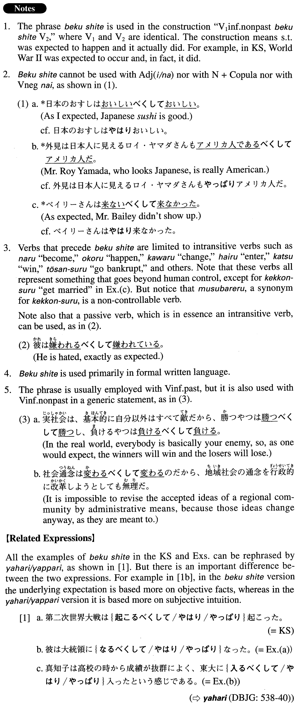

←
DoJG
→
べくして
(A. 36)
Example sentences
(ks).
第二次世界大戦は起こる
べくして
起こった。
World War II occurred, exactly as expected.
(a).
彼は大統領になる
べくして
なった。
He became president, exactly as expected.
(b).
真知子は高校の時から成績が抜群によく、東大に入る
べくして
入ったという感じである。
Machiko distinguished herself as an excellent academic achiever in her high school days. As expected, she got into the University of Tokyo.
(c).
二人は性格、趣味、学歴がすべて一致している。二人は結婚する
べくして
結婚したのだ。
Their personalities, hobbies and academic backgrounds match. Just as (we) expected, those two got married.
(d).
ゆみの運転はいつも荒っぽいし、エンジンもブレーキも調子が悪かった。事故は起こる
べくして
起こった。
Yumi's driving was always wild, and her car's engine and brakes weren't in good condition. An accident occurred, exactly as expected.
(e).
あの会社は経営がずさんだったから倒産する
べくして
倒産したのだ。
The management of the company has been so careless that it went bankrupt, exactly as expected.
(f).
私は自宅が海のすぐ近くのため、釣り好きになる
べくして
なったと言っていいでしょう。
You could say that I became fond of fishing, exactly as expected, because my home is so close to the ocean.
Formation
V1informal nonpast
べくして
V2 (where V1=V2)
Exception: する→{す/する}べくして
起こる
べくして
起こる
Something occurred as expected
成功す(る)
べくして
成功する
Something/someone succeeds exactly as expected
